Taking Stock
Athenaeum makes the process of taking stock very easy. You may start and stop a stock-take at any time and you can perform a partial or a full stock take.
There are a number of ways of performing the stock-take and these might depend upon the equipment you might have at hand:
- use a wireless scanner (e.g. with Bluetooth)
- in direct mode which talks either directly to Athenaeum as you scan items. You have to consider the physical distance between the scanner and the computer.
- or in data collection mode, which you periodically connect back to Athenaeum and "dump" the bar codes.
- A combination of the first two methods (some scanners will automatically switch to data collection mode if they go out of range of the base station).
- use a standard scanner connected to a laptop with Athenaeum loaded and connected wirelessly to the server, and wheel it around on a trolley
- Bring all your items to be stock taken to the computer and scan them in piles.
We recommend that you return all issued items if you can and close the library for issues and returns, but this is not necessary.
Next, back up!
Closing the library is not a necessity, it can make it easier to take stock and not miss items.
Before you start
Check/Set the run number
When you start a new stock take, Athenaeum increments the number stored in the customisation tab of admin.

The number in that box is not really important, though it is helpful if it reflects something identifiable, such as the year of the stock take.
If you are about to start your 2020 stock take, then you might ensure the number in the admin preferences is 2019, so when you start the new stock take, it is changed to 2020.
Maybe configure your main menu
Athenaeum allows you to configure the items on the main menu, including a "continue stock take" button.
Consider removing the items you are not likely to use from the main menu for the duration of the stock take and adding "Continue Stock take"
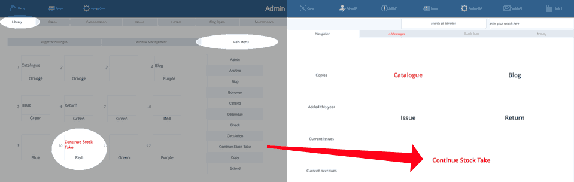
Return first, during or later?
It is up to you whether you recall issued items before the stock take or not.
The missing report has the option of excluding issued items.
Note that if - during the stock take - you scan an item that is issued, then Athenaeum will return it, assuming that because you have the item in your hand, it is no longer in the hands of the issued person or entity. If that return triggers late return fees, then those fees will be added.
Also note that if you return an item in the normal way - that is, using the return function - then the item is NOT included in the stock take. This is because there is no global "stock take" mode in Athenaeum as stock take can be isolated to individual computers or libraries.
Tell Athenaeum to Start a new stock take only once
Regardless of the method below you use, you must trigger a "new" stock take only once.
- Go to the Catalogue
- Choose Utility
- Click the Stock take tab
- Click Stock take
- Click "New"
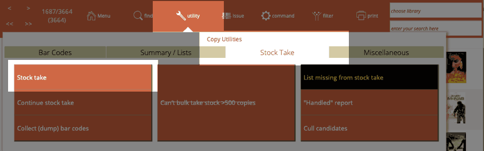 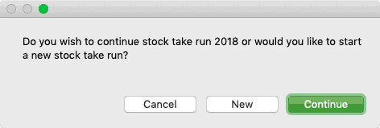
Choosing New simply increments the current stock take run number and records that new run number against scanned items and in the stock take log.
Method 1—Direct Stock take
This method takes stock as you scan the items directly.
Click the Continue Stock Take button you configured on the main menu or from Catalogue Utilities.
Next, get scanning.
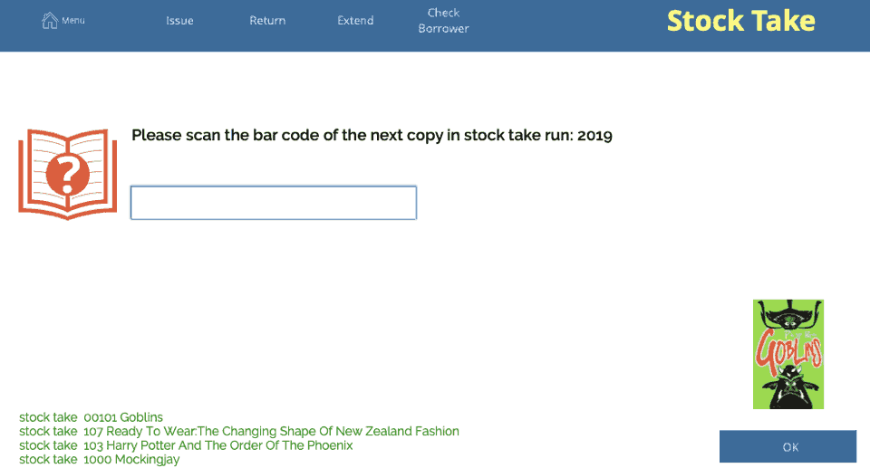
As you scan items, the stock-take dialog is updated at the bottom left (the last transactions log), reminding you of where you were up to.
Once you are ready for a break, simply leave the the field empty and click on OK or click the main menu button. Athenaeum will stop the stock take progress.
The next time, simply continue the stock take as described above.
Method 2—Indirect Stock take
You might use the 'dump bar codes' feature. This allows you to collect a number of bar codes first and then stock take them in bulk within Athenaeum.
A laptop, bar code scanner and wireless network is brilliant in this scenario.
Set the scanner to data collection mode and start scanning. Scan all of the items in a manageable section of the library (say 40 to 100 items at a time) and then dump the codes into Athenaeum, or even a text editing program.
We suggest you scan manageable chunks, because as you "dump" the codes, then if problems arise such as items reported as in the archive, you can more quickly retrace your steps to find the offending item.  Return to the Stock take, reserves, Misc tab and click the "dump" bar codes button.
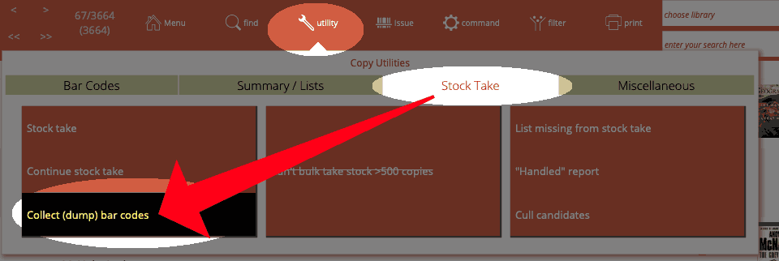  Scan, or paste (dump) your bar codes into the field where the cursor is flashing:  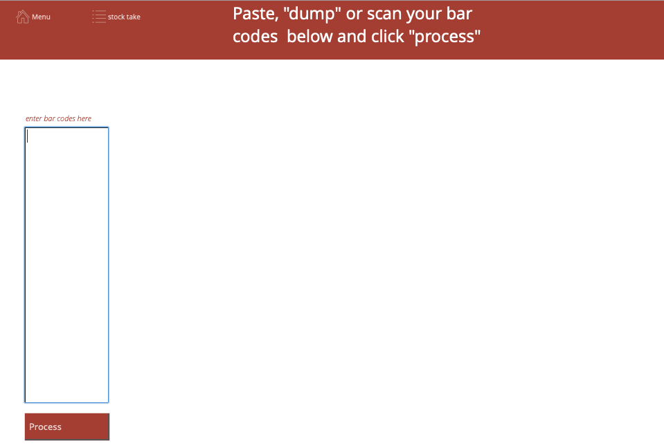
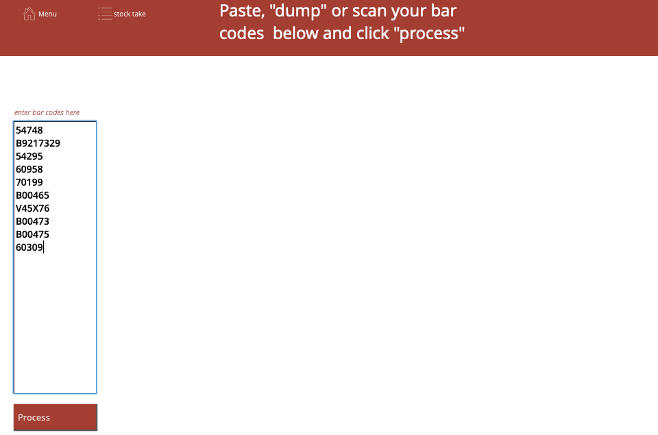
Then click the Process button.  Each bar code is processed in turn, and marked as part of the current stock take run.
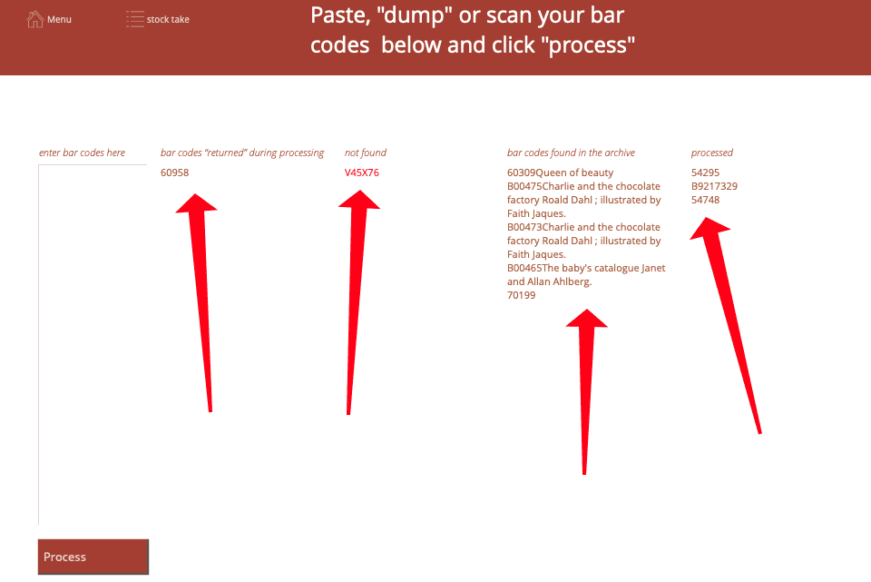
-
any items that were issued will be returned and listed.
-
any bar codes that were found in the archive are shown in a message
-
any bar codes that are not found are shown in a message
-
bar codes that are processed without incident are listed on the right
note: you can navigate to the log and view individual stock take actions if there isn't not sufficient room to display messages or you want to check further details
Method 3—Mark Found Set as Taken Stock
In some cases you may have a set of books which are all accounted for (for example a class set or an encyclopaedia) and you do not have to individually scan these during a stock take:
Perform a Search so that the Found Set encompasses all items to be marked as taken stock.
Click Utility->Utility->Stock take "Take Stock XX copies"
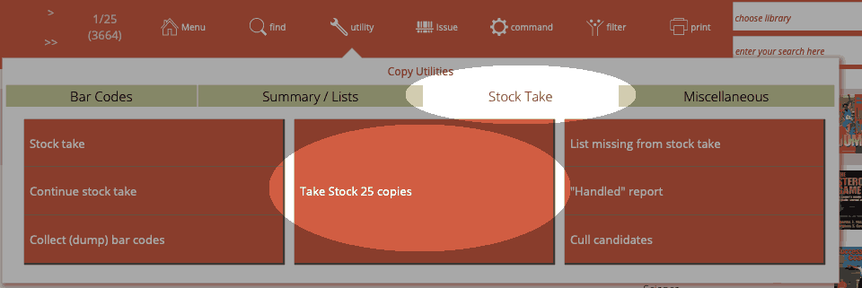
You are asked to confirm this action.
note that you can take stock of up to 500 items this way
Continuing a Stock Take
Resuming a stock take just involves clicking on the Continue stock take button: - on the main menu (if you put it there) - on the Catalogue Utility->Stock Take tab
The Stock Take screen reappears and you simply pick up where you left off.
List Missing items from Stock take
After completing the stock take, you will be interested to find which books are missing from the catalogue. In the Catalogue screen click on the Utility button and click on the Stock take/Reserve tab. Next, click on the List missing from stock take button
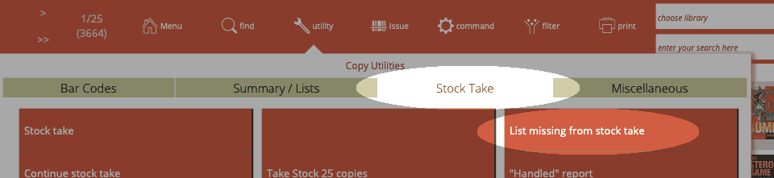
You are presented with a number of options as to what is to be included or excluded from the report.
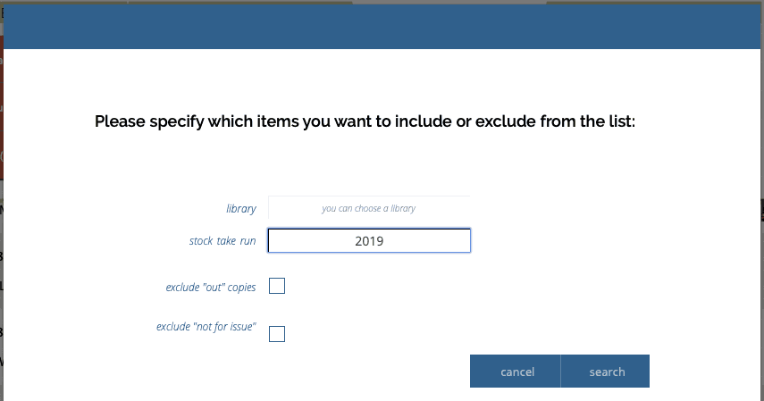
Note that if you have specified "libraries" for your catalogue, you can limit a the report to just that library.
Also Note that you can list missing from prior stock take runs, as well.
Choosing a "Library" specifies to only search copies assigned to a "library" flag checked.
You can choose to omit copies which are currently out of the library and therefore were not scanned during your stock take.
As 'not for issue' copies such as the Reference section are often not included in a stock take anyway, you can choose to omit those copies from your list.
A list of copies not taken stock appears, taking into account the selections from the above dialog boxes.
You can now Print this list by location and check each item individually, or summarise with one of the financial options.
Any item in the list can be archived if required (see Archiving for more information on disposing and archiving items).
List Missing Items 1 Location Only
One way to find items taken stock in a particular location is to perform a custom find, enter the location into the location field and the stock take run number into the stock take field.
To find items not taken stock in a particular location or library, enter a custom find, enter the location into the location field or select the library (or both) and then add a new request omitting the stock take run number.
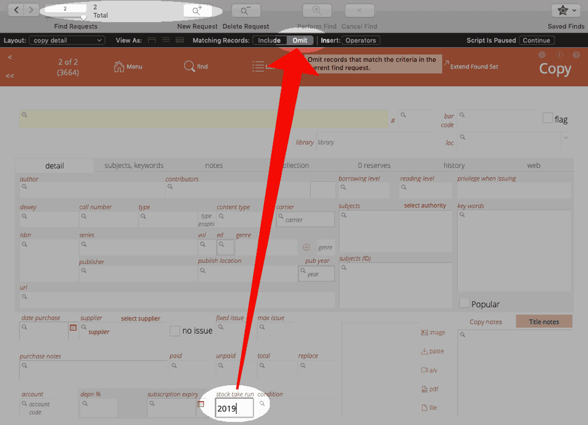
"Handled" report
The manual stock take procedure requires the user to scan or enter the code for every item in the catalogue.
However, you may wish to chose to perform a very quick stock take on items not recently handled.
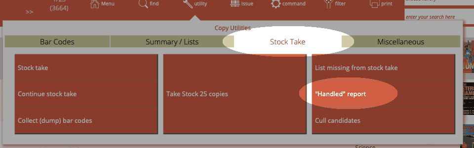
This procedure makes it easy to find all items in the library that have not been 'handled' for a specified period number of days. Copies that have not been 'handled' are potentially missing from the library.
You can also specify a "library" if you wish to use that.
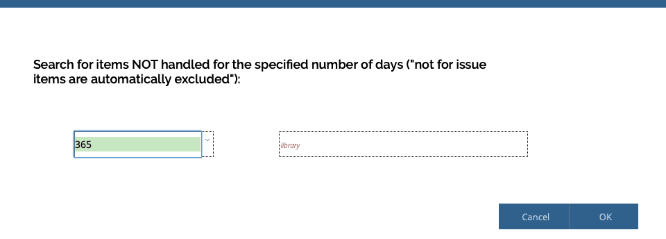
Specify the period (in days) during which copies were not handled. A list of all copies not handled over the period specified appears.
You can now print this list and check these books individually and make decisions based on your findings.
You can further refine this list by using the Constrain filter options.
Handled
The following actions mark a copy as handled:-
- issuing it successfully
- attempting to issue it unsuccessfully
- returning an copy
- extending an issue
- manual stock take
- archiving and restoring a copy
- when included in the found set that is added to "reading history"
Manually checking handled date
You can manually find the on the date an item was handled by clicking the find button and entering a date expression in the last handled date at the bottom of of the issue history->this copy tab.
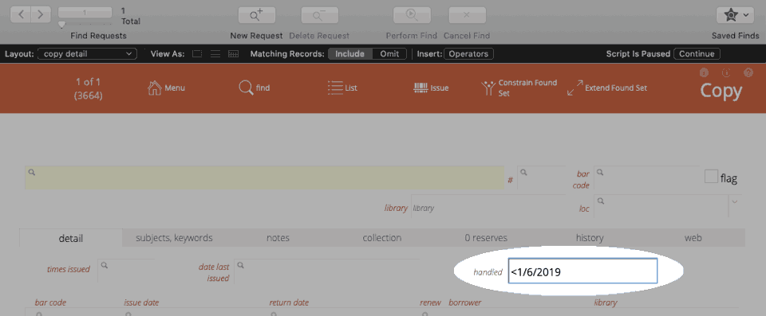
Closing your stock-take
You don't.
Simply generate the reports you want. When you start the next stock take, Athenaeum will increment the stock take number and you are away.